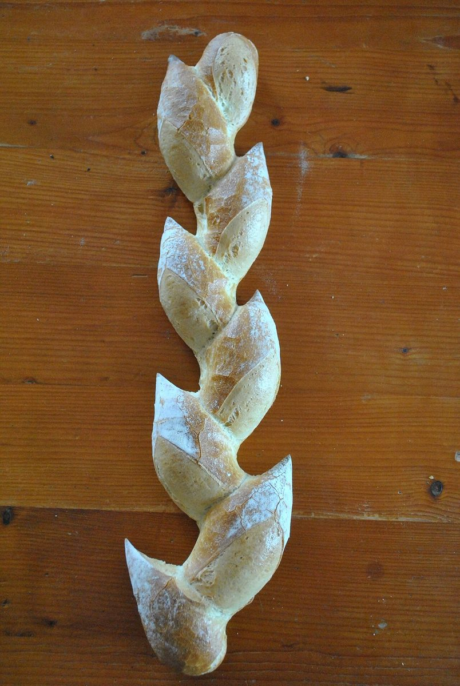

小さな
ベーカリー / 三重県鈴鹿市池田町
HAPPY
三重県鈴鹿市池田町にある「小さなベーカリーHAPPY」のご案内ページです。営業時間やメニューなど、詳しいことは準備中。まずはInstagramをのぞいてみてください。

制作側の連想
「小さな」から、サイズタグを思い浮かべた
屋号の由来は分かりません。制作側は「小さな」という言葉から、洋服についているSS・S・M・L・LLのサイズタグを連想しました。そこでこのサイトは、5つのページをサイズ表記の札に見立てて並べています(SS=ホーム、S=店のこと、M=メニュー、L=口コミ、LL=アクセス)。お店の理念・由来とは無関係の、制作側の連想です。お店の規模や提供内容を示すものでもありません。
5枚のサイズ札
ページを、札でめくる。
札の中の写真は、札の雰囲気に合わせて選んだフリー素材のイメージです。お店のものではありません。
- SS

撮影地不明のイメージ SS|ホーム
いま見ているページです。
- S

撮影地不明のイメージ S|店のこと
確認できていることと、制作側の想像を分けて書いています。
- M

国外のイメージ(米国) M|メニュー
メニューと価格は準備中です。
- L

撮影地不明のイメージ L|口コミ
制作側が創作した、イメージ例です。
- LL

撮影地不明のイメージ LL|アクセス
所在地と地図をまとめています。
ご案内
お店のこと(確認できたものだけ)
| 所在地 | 〒513-0032 三重県鈴鹿市池田町68-3 |
|---|---|
| 電話 | なし |
| 営業時間 | 準備中 |
| 定休日 | 準備中 |
| ご予約 | 準備中 |
| 駐車場 | 準備中 |
| SNS | Instagram @happybakery_8 |